10 部片单 · 恐怖 / 科幻 / 惊悚 / 悬疑 / 剧情
| # | 片名 | 类型 | 评分 / 状态 |
|---|---|---|---|
| 01 | 三块广告牌 | 剧情 / 犯罪 / 悬疑 | 8.7 / 90% / 88 |
| 02 | 海市蜃楼 | 悬疑 / 惊悚 / 科幻 | 7.9 / 93% / 7.4 |
| 03 | 一级恐惧 | 悬疑 / 犯罪 / 法庭 | 8.5 / 75% / 7.7 |
| 04 | 无名女尸 | 恐怖 / 悬疑 / 惊悚 | 7.7 / 86% / 6.8 |
| 05 | 科洛弗道10号 | 科幻 / 惊悚 / 悬疑 | 7.1 / 90% / 7.2 |
| 06 | 绿皮书 | 剧情 / 喜剧 / 传记 | 8.9 / 78% / 69 |
| 07 | 无姓之人 | 科幻 / 剧情 / 爱情 | 8.1 / 67% / 7.7 |
| 08 | 狙击电话亭 | 惊悚 / 犯罪 | 7.4 / 71% / 7.1 |
| 09 | 林中小屋 | 恐怖 / 惊悚 / 元恐怖 | 7.2 / 92% / 7.0 |
| 10 | 超时空接触 | 科幻 / 剧情 / 悬疑 | 8.4 / 75% / 7.4 |
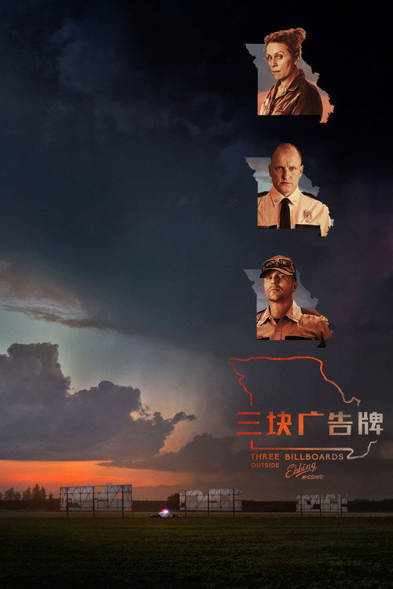
三块广告牌 Three Billboards Outside Ebbing, Missouri
女儿被奸杀半年没破案。母亲租下两块广告牌，把警长骂上了墙。
剧情梗概
密苏里州的小镇艾宾，米尔德里德·海耶斯的女儿安吉拉在郊外被奸杀，案子半年没破。米尔德里德用一笔钱在通往镇上的两条乡道旁租下两块空置的广告牌，上面写着：「爱女惨遭奸杀」「案发半年仍未破案」「警长威洛比，怎么回事？」广告牌炸翻了全镇，也炸翻了警长威洛比——一个刚查出癌症晚期的好人。警局里那个种族主义小警察迪克森把怒气撒在米尔德里德身上，而威洛比用尽最后的时间想斡旋。当暴力开始循环，没有人能干净地抽身。
亮点
- 马丁·麦克唐纳自编自导，此前凭《六个枪手》拿过奥斯卡最佳真人短片，长片《杀手没有假期》《伊尼舍林的报丧女妖》已奠定黑色荒诞基调。
- 弗兰西斯·麦克多蒙德饰米尔德里德，拿下第 90 届奥斯卡最佳女主角；她把一个「不道歉的母亲」演得又硬又疼。
- 山姆·洛克威尔饰种族主义小警察迪克森，拿下奥斯卡最佳男配角；他把一个可笑又可悲的恶人演出了人心。
- 影片获奥斯卡最佳影片、最佳女主、最佳男配、最佳原创剧本四项提名，最终拿下女主、男配、原创剧本三项。
- 全球票房约 1.6 亿美元，威尼斯电影节最佳剧本奖；豆瓣 8.7、烂番茄 90% 是近年颁奖季最高共识之一。
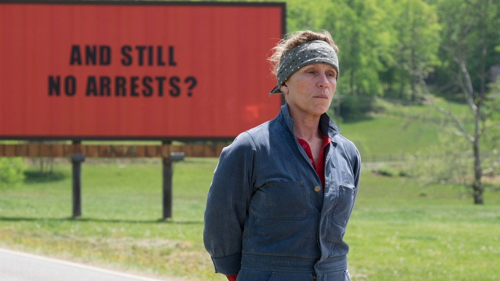
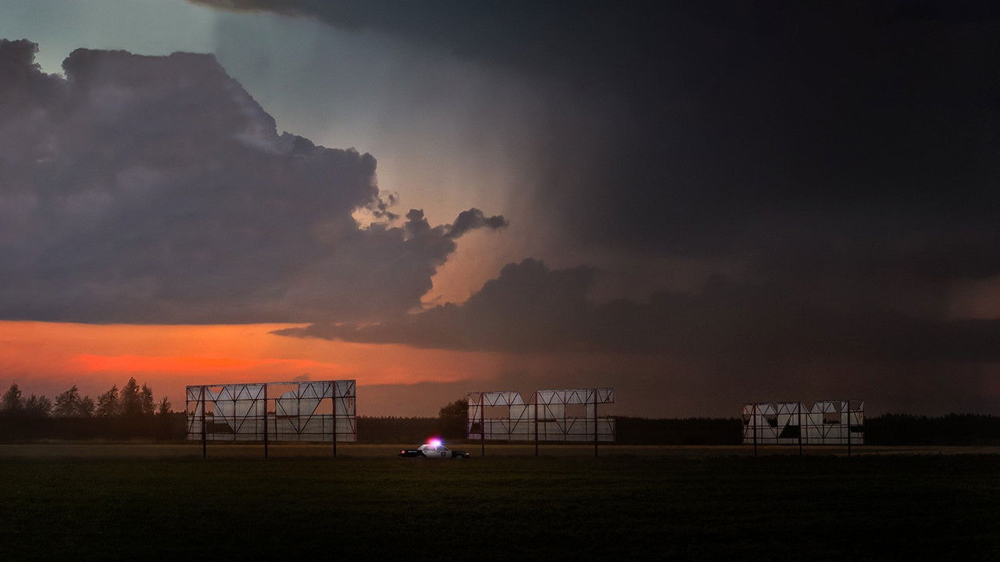
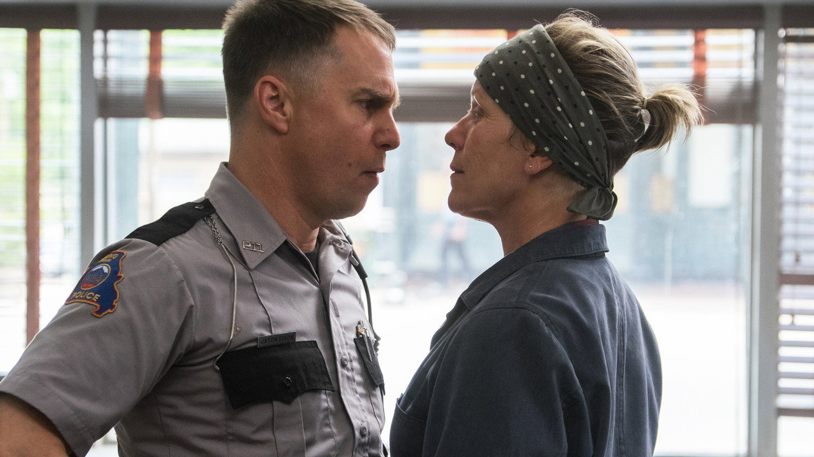
导演与主创 · 他们的历史作品
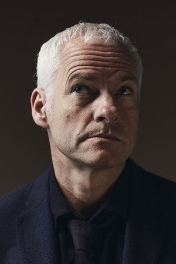
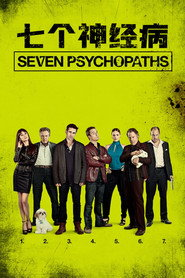
七个神经病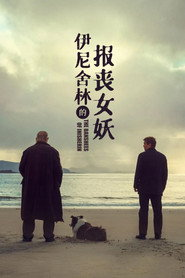
伊尼舍林的报丧女妖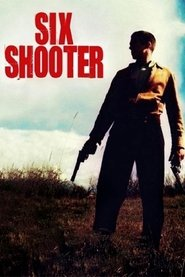
六发子弹的手枪
 冰血暴
冰血暴 恐龙当家
恐龙当家 阅后即焚
阅后即焚
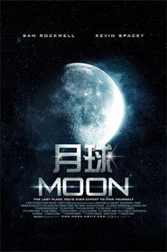
月球 钢铁侠2
钢铁侠2 坏蛋联盟
坏蛋联盟 鬼驱人
鬼驱人短评（轻微剧透）
《三块广告牌》最狠的地方是它不让任何一个人全对。麦克唐纳写米尔德里德，没有把她写成「正义的母亲」——她刻薄、固执、会对神父和牙医动手，她要的不是破案，是要有人为女儿的死负责，哪怕负责的人只是「没能更快一点」的警长。而威洛比，那个被她骂上墙的警长，是全镇最好的人，刚查出癌症晚期。影片真正的主题不是「破案」，是「愤怒怎么在人与人之间传染」：母亲烧广告牌的怒，变成小警察打人的怒，又变成母亲烧警局的怒。麦克唐纳没有给它一个干净的结局——凶手始终没抓到，坏人没被惩罚，但迪克森在结尾抱着广告牌碎片、读着米尔德里德留下的信，那一刻你相信这两个人可能还能走下去。缺点要说：它的暴力与种族主义笑点尺度很大（R 级），部分观众会觉得对小警察的「救赎」转得太轻易；豆瓣 8.7 / 烂番茄 90% 是高评价，但 MC 88 也说明它基本是共识好评。轻微剧透：最后那场公路戏，米尔德里德和迪克森说「我们先来杯酒吧，再决定要不要去杀人」——影片把复仇交还给两个伤痕累累的人，而不是交给正义。
为什么值得一看
喜欢《老无所依》《百万美元宝贝》那种「道德没有标准答案」的剧情片的观众；能接受粗口、暴力与种族主义桥段（R 级）的成年观众。内地 2018 年曾公映，流媒体易得。
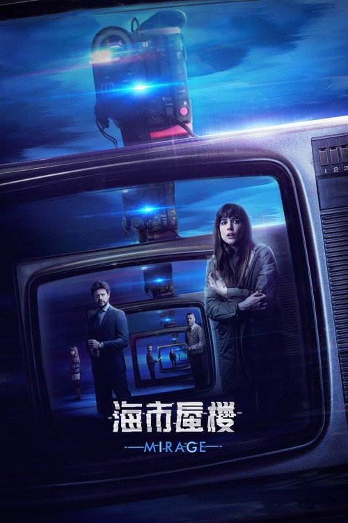
海市蜃楼 Mirage
一场雷暴打通了 25 年的时差。你救了一个孩子，却弄丢了自己的孩子。
剧情梗概
1989 年，西班牙一场大雷暴夜，11 岁的尼克亲眼看见邻居杀了自己的妻子，他吓得失手砸碎了窗户、逃出家门，从此成为案件唯一的目击者，却在逃亡路上被车撞死。25 年后，2014 年，同样一场雷暴夜，Vera 一家搬进尼克当年的那栋房子。一台连接着旧电视录像带的摄像机，让 Vera 意外和 1989 年的尼克通上了话。她提醒尼克别逃、活下来、去报警——尼克照做了，凶手落网。但第二天醒来，Vera 发现世界变了：她的女儿不存在了，丈夫是别人的，而那个 25 年前的凶手重新逍遥法外。她必须在一夜之间找出证据，把自己被抹掉的人生找回来。
亮点
- 奥里奥尔·保罗编剧并执导，他是西班牙悬疑片专业户，《看不见的客人》（2016）让他一鸣惊人，本片是同一套「时间闭环 + 谎言嵌套」的升级。
- 阿德里亚娜·乌加特饰 Vera，一人撑起「两个版本的人生」；奇诺·达林饰她两个时空里的丈夫，气质完全不同。
- 影片把 1989 与 2014 两条时间线拍得几乎无缝，靠服装、发型、家具的细微差别区分，看完才意识到线索一直摆在眼前。
- 烂番茄 93%，是 2018 年口碑最好的悬疑片之一；内地 2019 年引进，豆瓣 7.9。
- 与《看不见的客人》共享「蝴蝶效应 + 密室谎言」，但把舞台从法庭换成了「改写过去」。
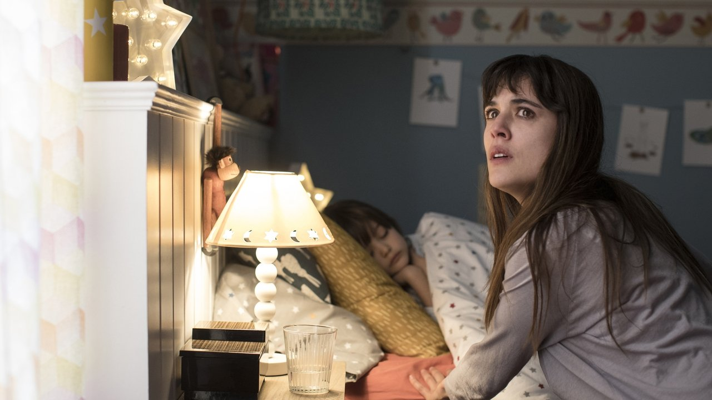
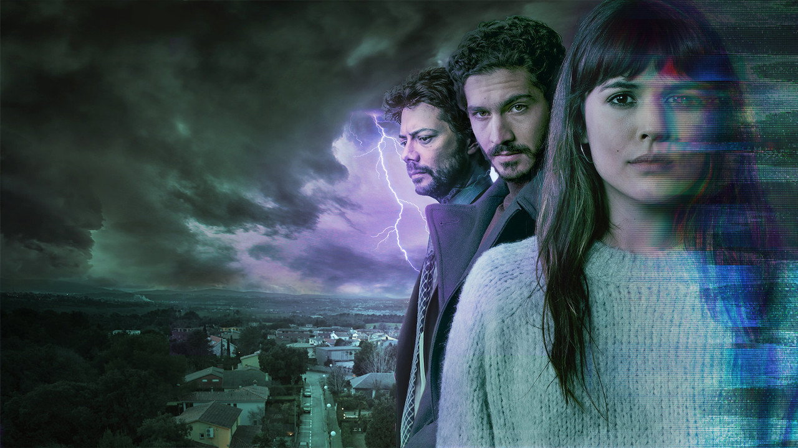
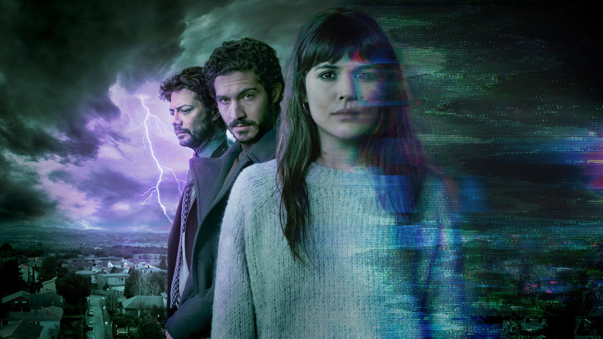
导演与主创 · 他们的历史作品

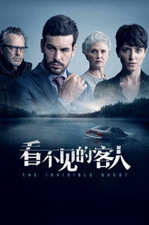
看不见的客人 女尸谜案
女尸谜案 上帝的笔误
上帝的笔误 Ecos
Ecos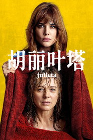
胡丽叶塔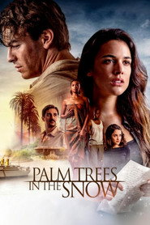
雪中的棕榈树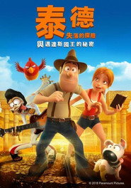
秘鲁大冒险2：迈达斯国王的秘密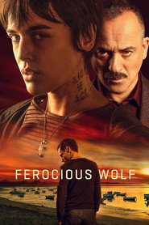
凶狼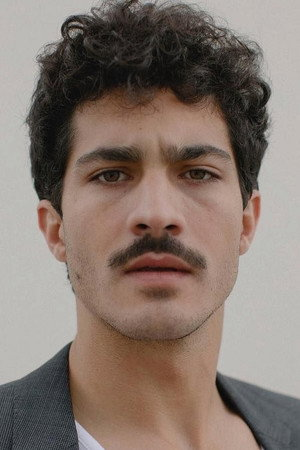
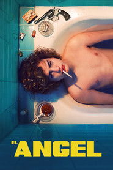
死亡天使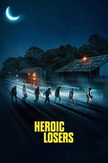
英勇废柴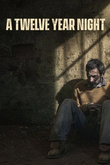
地牢回忆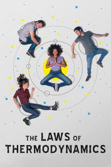
爱情热力学定律短评（轻微剧透）
《海市蜃楼》是奥里奥尔·保罗把《看不见的客人》那套玩法放大成「时空穿越」版。它最聪明的一笔是：穿越不是靠机器，是靠一场 25 年一遇的雷暴 + 一台老摄像机，把两个相隔四分之一个世纪的夜晚叠在了一起。于是 Vera 的困境比普通悬疑更狠——她不是要破案，她是要把自己被抹掉的人生找回来，而唯一的办法是去证明一个「所有人都已忘记」的谋杀。影片前半段节奏飞快，把「你救了一个孩子，却丢了自己孩子」的悖论甩出来，后半段靠一次次时间线改写把观众绕进去。缺点要说清楚：它比《看不见的客人》长了 20 分钟，中段的时间线切换对耐心是考验，第一次看很容易在「现在到底是哪条线」上卡住；而且它给了一个偏温情的闭环结尾，喜欢冷酷收尾的人会觉得不够狠。轻微剧透：当 Vera 终于明白「只要尼克活着，我的女儿就不存在」，她要做出的不是选择，是对自己人生的重新接受——影片把「得到必然失去」拍成了悬疑片最柔软的内核。
为什么值得一看
喜欢《看不见的客人》《记忆碎片》《彗星来的那一夜》那种「时间线嵌套」悬疑的观众；能接受慢热、需要跟住两条时间线的人。含少量暴力与惊悚（15 禁），比纯恐怖片轻。内地 2019 年曾引进。
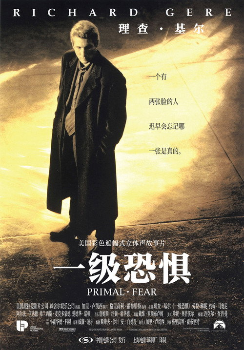
一级恐惧 Primal Fear
一个温顺的辅祭被控杀人。他的律师越查，越觉得这孩子藏着另一个人。
剧情梗概
芝加哥，德高望重的主教被杀，现场留下一个浑身是血、结巴、虔诚的年轻辅祭亚伦。知名刑辩律师马丁·维勒为了名利和正义，主动接下这桩看似必输的案子。亚伦说自己当晚在主教那里抄写经文，什么都不知道，维勒发现主教私下过着极其肮脏的生活，证据对他越来越有利。可亚伦偶尔会突然「断片」，醒来后变成一个叫「罗伊」的、粗鲁、暴戾、满口脏话的另一人格，而「罗伊」说自己杀了人。维勒决定用「多重人格」做无罪辩护，却在越来越接近真相时，发现自己也被这孩子玩弄于股掌。
亮点
- 格里高利·霍布里特执导，本片是他的长片导演处女作（此前拍了大量电视剧，包括《希尔街的布鲁斯》）。
- 爱德华·诺顿饰亚伦／罗伊，这是他的银幕处女作，一举拿下金球奖最佳男配角、奥斯卡最佳男配角提名，惊艳全场。
- 理查·基尔饰律师马丁·维勒，把一个自负、精明、被理想主义包装的讼棍演得让人又爱又恨。
- 改编自威廉·迪尔的小说，法庭戏扎实，多重人格的反转在当年极具冲击力。
- 全球票房约 1 亿美元，是 1996 年低成本高回报的范本；豆瓣 8.5 长期稳居。
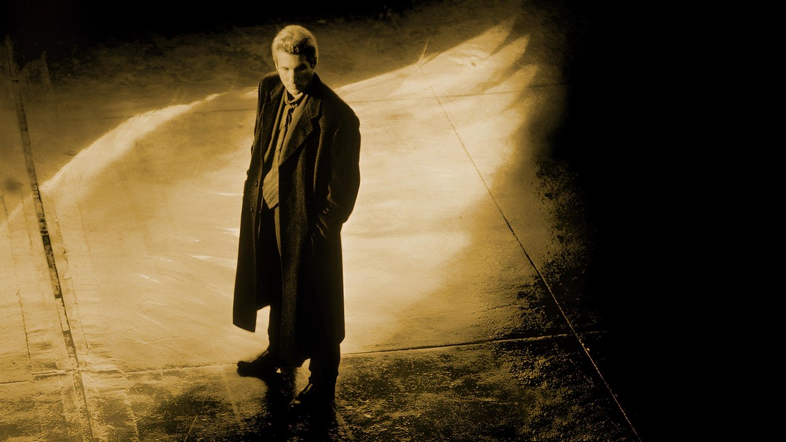
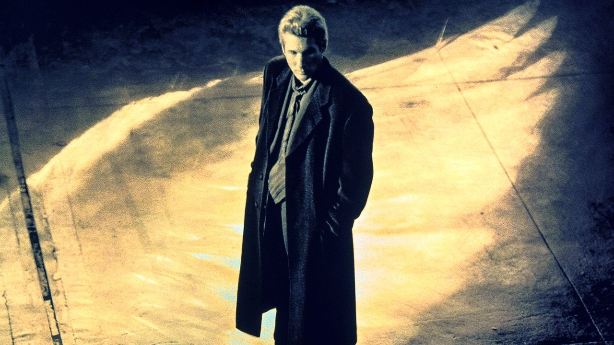
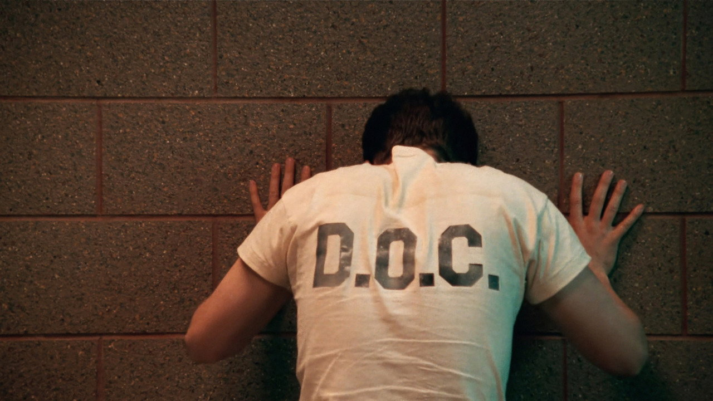
导演与主创 · 他们的历史作品
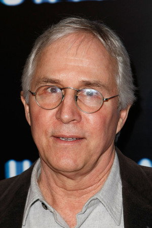
 破绽
破绽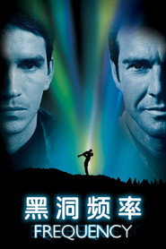
黑洞频率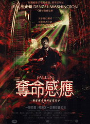
夺命感应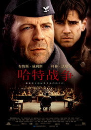
哈特的战争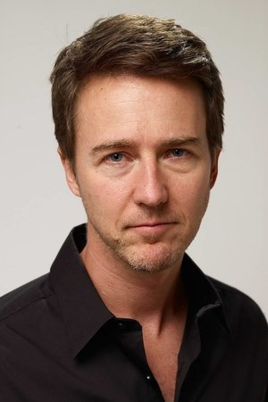
 搏击俱乐部
搏击俱乐部 无敌浩克
无敌浩克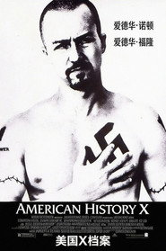
美国X档案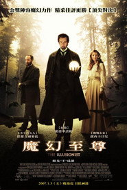
魔术师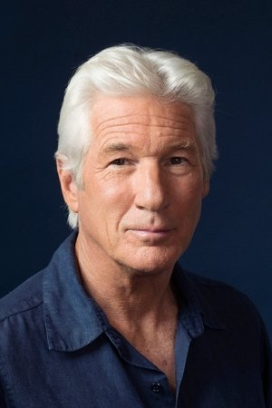
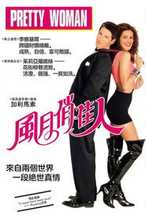
风月俏佳人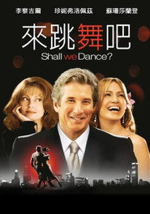
谈谈情，跳跳舞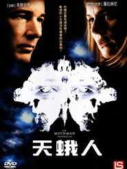
天蛾人的预言短评（轻微剧透）
《一级恐惧》是那种「结局一出来，前两个小时全要重想」的电影。霍布里特把一场法庭戏拍得步步紧逼，但真正的主角其实是诺顿饰演的亚伦——一个结巴、爱哭、虔诚到让人心疼的辅祭，你从第一分钟就想保护他。可影片一点点往你脑子里塞别的东西：那个叫罗伊的人格、那段丢失的时间、那些他说「我不记得」的空白。诺顿的表演是神级，他让两种人格之间的切换不是「演」，而是像同一个身体里真的住着两个人。理查·基尔的维勒则是影片的镜子——他以为自己在拯救一个无辜的孩子，其实他才是那个被「天真」骗得最彻底的人。缺点必须说：它的反转现在看已经不算新鲜（多重人格梗被用烂了），而且结尾对律师的「反杀」略显刻意、解释过多；烂番茄仅 75% 说明当年影评人对它「类型大于深度」有保留，豆瓣 8.5 则是观众在替它撑场。轻微剧透：当亚伦在最后一刻突然收起结巴、对着维勒露出那个「罗伊式」的冷笑，你才明白——从头到尾没有第二个人格，只有一场演了整部电影的骗局。
为什么值得一看
喜欢《十二怒汉》《控方证人》《看不见的客人》那种法庭 / 心理反转的观众；能接受血腥与粗口（R 级）的成年观众。不适合想看「正义必胜」的人——它给的是另一回事。内地未引进。
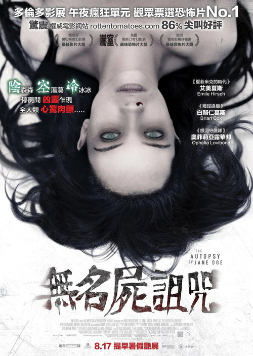
无名女尸 The Autopsy of Jane Doe
一具无名女尸送进太平间。外表完好，体内却写满了别人死去的痕迹。
剧情梗概
一间小镇太平间，父亲奥斯汀和儿子小汤一起经营验尸生意。一个雨夜，警长送来一具离奇的女尸：她浑身赤裸、没有任何外伤，却是一桩谋杀案的死者。奇怪的是，案发现场其他人都是外伤致死，唯独她「完好」。奥斯汀决定连夜做尸检，好让警长天亮前拿到报告。随着解剖一层层深入——舌骨断裂、手腕陈旧骨折、肺部灌满水、皮肤下有奇怪的符文——他们发现这具尸体不只是在「被解剖」，像是在「被读取」；而太平间外，越来越不对劲。
亮点
- 安德烈·艾弗道夫执导，此前以伪纪录恐怖《追击巨怪》成名，本片是他转向英语惊悚的转折点。
- 布莱恩·考克斯（《谍影重重》《猩球崛起》）饰老法医奥斯汀，埃米尔·赫希饰儿子小汤，一对父子档撑起几乎全片的封闭空间。
- 影片把「尸检」本身拍成了恐怖源——每一个解剖发现都是一次惊吓，且逻辑自洽，是近年少见的「硬核尸体恐怖」。
- 烂番茄 86%，在 2016 年的恐怖片里口碑突出；靠密闭空间与声音设计制造压迫，而非 jump scare。
- 成本极低（约 450 万美元），是「小成本高概念」恐怖的范本。
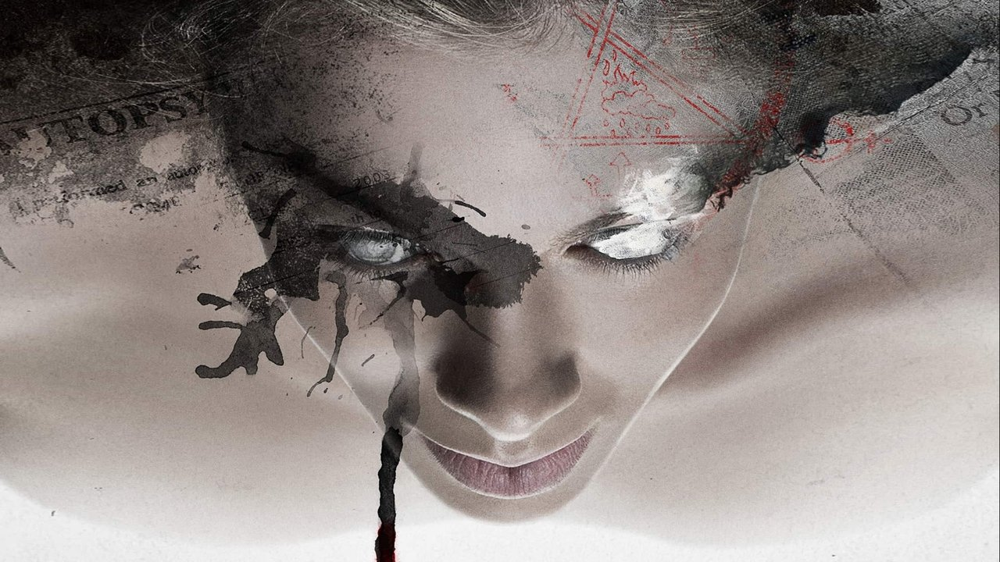
导演与主创 · 他们的历史作品
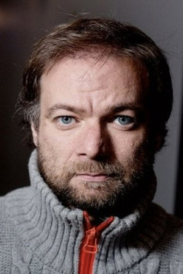
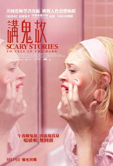
在黑暗中讲述的恐怖故事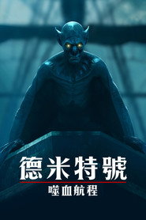
得墨忒耳号的最后航程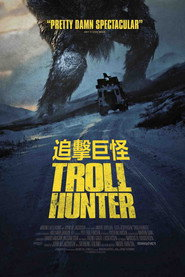
追击巨怪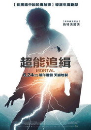
超能追缉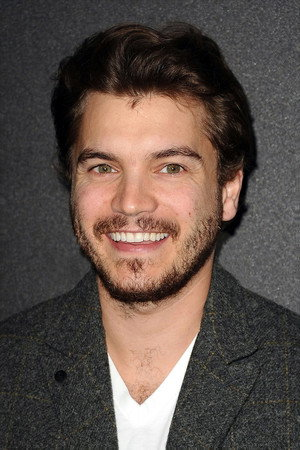
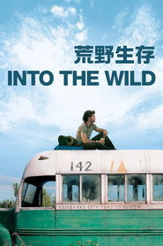
荒野生存 好莱坞往事
好莱坞往事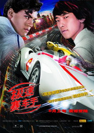
极速赛车手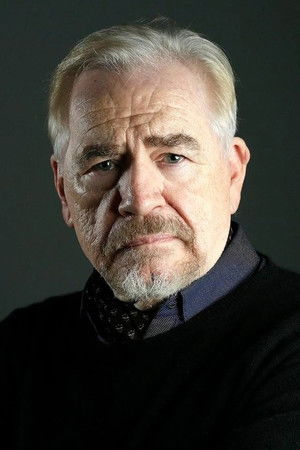
 特洛伊
特洛伊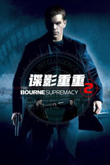
谍影重重2 猩球崛起
猩球崛起短评（轻微剧透）
《无名女尸》是一部把「尸体」从被观看的对象变成「主动的恐怖」的电影。艾弗道夫最聪明的地方是：他没有用鬼从柜子里跳出来吓你，而是用解剖台上一层层被打开的身体——舌骨断过、手腕旧伤、肺里的水、皮肤下的符文——把「这具尸体经历过什么」拼成一部越看越冷的血腥编年。影片的真正恐怖来自「认知」：当父子俩发现女尸的伤口和镇上死者的死法一一对应，你意识到她不是受害者，她是某种「容器」。它和大多数尸体恐怖片不同，父子关系是实的，老法医的固执和小汤的不安让密闭的太平间有人味。缺点要说：86 分钟偏短，第三幕从「解密」转向「驱魔」略显仓促，部分观众会觉得套路化；IMDb 6.8 也说明它的惊吓大过余味。轻微剧透：当小汤终于明白「她不是死人，她是被迫醒着的」，而父亲已经太迟——影片把「被活埋的千年怨念」收束在一个太平间里，比任何鬼屋都更让人后劲发凉。
为什么值得一看
喜欢《遗传厄运》《哭声》《它在身后》那种「民俗 + 身体恐怖」的观众；能接受血腥解剖画面与密闭空间压迫（R 级）的成年观众。胆小或用餐时间慎看。内地未引进。
科洛弗道10号 10 Cloverfield Lane
车祸醒来，你被锁在地下避难所。一个老人说：外面空气有毒，出去就是死。
剧情梗概
米歇尔车祸后醒来，发现自己被锁在密闭的地下避难所里，身边是一个叫霍华德的怪老头和一个叫埃米特的年轻人。霍华德说：外面刚遭到「攻击」，空气被污染，任何人出去都会死。米歇尔半信半疑，几次想逃都被拦下。地下空间物资齐备，却处处透着不对——霍华德的控制欲、墙上的旧照片、那套永远合不上的黄色生化服。她渐渐分不清：外面是真的末日，还是霍华德编的谎。而当她终于逃出去，发现的真相比她想的更离谱。
亮点
- 丹·特拉亨伯格执导，本片是他的长片处女作；监制是 J·J·艾布拉姆斯，与《科洛弗档案》(2008) 同属一个「伪连结」宇宙。
- 约翰·古德曼饰霍华德，贡献了近年最让人不安的「善意暴君」表演——亲切、细心、却让你毛骨悚然。
- 玛丽·伊丽莎白·温斯特德饰米歇尔，是整部片的精神锚点，观众跟着她的怀疑走完全程。
- 影片几乎全在单一地下场景完成，却靠剪辑与音效把「外面到底怎么了」的悬念撑足；烂番茄 90%。
- 成本约 1500 万美元，全球票房约 1.1 亿美元；获奥斯卡最佳音效剪辑提名。
导演与主创 · 他们的历史作品

 铁血战士：狩猎
铁血战士：狩猎 铁血战士：杀戮之王
铁血战士：杀戮之王 猛禽小队和哈莉·奎茵
猛禽小队和哈莉·奎茵 谋杀绿脚趾
谋杀绿脚趾 金刚：骷髅岛
金刚：骷髅岛短评（轻微剧透）
《科洛弗道10号》最妙的地方是它先让你相信「这是部密室惊悚」，再在最后一刻把桌子掀了。特拉亨伯格把最大的悬念放在「霍华德到底在不在撒谎」上——约翰·古德曼把那个角色演得极其可怕，不是因为他凶，而是因为他真的「在乎你」，却在乎到要把你锁起来。影片前半段是顶级的心理囚禁戏，你和米歇尔一起怀疑每一句「外面有毒」。而它真正大胆的是第三幕：当它终于把镜头转向窗外，你会发现这片子和《科洛弗档案》是同一个世界的另一角，那种「小成本密室突然接上大事件」的跳转让人头皮发麻。缺点要说：很多人觉得前两幕的张力在第三幕「外星揭开」后泄了气，从心理惊悚变成了爆米花特效；豆瓣 7.1 相对烂番茄 90% 偏低，正是这种「前后调性不一」的反映。轻微剧透：当米歇尔穿上那套黄色生化服走出地窖、抬头看见天空里真正的东西，影片把「你以为的末日是谎言，但末日是真的」这一刀，砍得干脆又漂亮。
为什么值得一看
喜欢《房间》式密室 +《科洛弗档案》式伪纪录科幻的观众；能接受紧张囚禁感与少量惊吓（PG-13，比纯恐怖片轻）的人。内地未引进，流媒体可看。
绿皮书 Green Book
一个意大利裔保镖，给一位黑人钢琴家开车，一路南下 1962 年的美国。
剧情梗概
1962 年，纽约。夜总会保镖托尼·利普失业了，接下一单活：给黑人钢琴家唐·雪利博士当两个月司机，陪他南下巡回演出。唐是受过顶级教育、谈吐优雅、住在卡内基音乐厅楼上的人；托尼是满嘴粗话、靠拳头吃饭的蓝领。两人从互相嫌弃开始：唐嫌托尼粗俗，托尼嫌唐「不像黑人」。但随着车越往南开，种族隔离的现实越赤裸——唐不能在白人餐厅吃饭、不能进白人旅馆、连上厕所都要被拦。一本《绿皮书》（专为黑人司机编写的旅行指南）成了他们的护身符，而两个人的关系也在路上慢慢变了。
亮点
- 彼得·法雷利执导，他此前是《阿呆与阿瓜》《我为玛丽狂》的喜剧导演，本片是他第一次拍严肃剧情，拿下奥斯卡最佳影片。
- 维果·莫特森饰托尼，为角色增重并模仿意大利裔口音；马赫沙拉·阿里饰唐·雪利，拿下奥斯卡最佳男配角。
- 影片获第 91 届奥斯卡最佳影片、最佳原创剧本、最佳男配角三项大奖。
- 改编自真实人物与事件，唐·雪利本人参与了前期采访；片名来自现实中的《黑人驾驶者绿皮书》。
- 全球票房约 3.2 亿美元，是 2018 年最卖座的颁奖季电影；内地 2019 年引进，豆瓣 8.9。
导演与主创 · 他们的历史作品

 指环王1：护戒使者
指环王1：护戒使者 指环王3：王者无敌
指环王3：王者无敌 指环王2：双塔奇兵
指环王2：双塔奇兵 神奇队长
神奇队长 蜘蛛侠：平行宇宙
蜘蛛侠：平行宇宙 本杰明·巴顿奇事
本杰明·巴顿奇事短评（轻微剧透）
《绿皮书》是一部「用轻的方式讲重的事」的电影。法雷利把 1962 年南方的种族隔离拍得不血腥、不苦大仇深，而是靠两个人的车程、一顿饭、一通电话，把歧视一层层摊开——唐想进餐厅吃饭被拒、想在池子里游泳被拦、连试衣间都要分颜色。影片最动人的不是「和解」本身，是两个骄傲的人各自放下的过程：托尼学会了写信、克制拳头，唐学会了用手吃炸鸡、对人敞开。维果和马赫沙拉的对手戏是全部火花的来源。缺点必须说：它从上映起就伴随「白人救世主视角」「美化历史」的争议，真实中的唐·雪利家人也公开表达过不满；Metacritic 仅 69、烂番茄 78% 是近年奥斯卡最佳影片里偏低的一档，说明专业影评人比观众（豆瓣 8.9 / IMDb 8.2）更挑剔。轻微剧透：结尾那个圣诞夜，唐终于被托尼一家请进家门——这一笔不是「问题解决了」，是「两个人都愿意多走一步」，克制却刚好。
为什么值得一看
喜欢《为奴十二年》《隐藏人物》《触不可及》那种「跨种族友谊 + 公路」的观众；想看轻松一点、含笑带泪的剧情片的人。PG-13，全年龄友好（含少量粗口与时代种族歧视描写），内地 2019 年曾公映。
无姓之人 Mr. Nobody
他是地球上最后一个会死的人。在他弥留之际，你看到的是他所有可能的人生。
剧情梗概
2092 年，人类已经不死。118 岁的尼莫·无人是最后一个会死的人，躺在病床上，记忆像碎玻璃一样散开。一个记者问他：你最后悔的，是哪一次选择？于是影片在尼莫 9 岁、15 岁、34 岁之间来回跳——每一次他都在一个岔路口做了不同的选择：跟爸爸走还是跟妈妈走、去不爱他的女孩还是等真爱、跳不跳上那列火车。这些选择裂成无数条人生：他有的成了宇航员、有的成了穷记者、有的在车祸里失去家人、有的孤独终老。而整部片要问的，是「如果人生可以重来，你会更好吗」。
亮点
- 雅克·范·多梅尔自编自导，比利时作者导演，此前《小英雄托托》《第八日》已以奇诡想象著称，本片是他预算最大（约 3300 万欧元）的作品。
- 杰瑞德·莱托饰尼莫，一人演出少年、中年、老年的无数种人生状态，是影片的视觉与情感核心。
- 影片把「蝴蝶效应」「多重宇宙」拍成了诗：每一条人生线都用不同的色调、音乐与意象区分，看完像做了一场很长很长的梦。
- 获第 66 届威尼斯电影节金奥赛拉奖（技术贡献）；豆瓣 8.1，在科幻迷中享有极高 cult 地位。
- 配乐由皮埃尔·范·达姆尔操刀，主题旋律贯穿全片，是「听觉上的时间线」。
导演与主创 · 他们的历史作品
 X特遣队搏击俱乐部
X特遣队搏击俱乐部 梦之安魂曲
梦之安魂曲 Morbius
Morbius短评（轻微剧透）
《无姓之人》是那种「看完会沉默很久」的科幻。范·多梅尔不跟你讲硬核物理，他讲的是「选择」——一个 9 岁男孩在父母离婚那天站在月台，往左还是往右，这一个动作裂成了他全部可能的人生。影片最迷人的地方是它把多重宇宙拍出了温度：你能看见尼莫在每一条线里都爱着同一个女孩、都错过、都后悔，却又在另一条线里拥有完全不同的结局。杰瑞德·莱托的表演把「同一个人活了一百种活法」演得可信又心碎。缺点必须说：141 分钟、三条时间线 + 无数支线，第一次看极易迷路，需要耐心和二刷；烂番茄仅 67% 说明它在西方影评人里褒贬不一（很多人觉得「太满、太煽情」），豆瓣 8.1 是华语科幻迷在替它撑场。轻微剧透：当老年尼莫终于说出「所有的人生都是真的，因为我都活过」，影片把「遗憾」重新定义成了「丰盛」——你不必选对，你只要都认真地活过。
为什么值得一看
喜欢《降临》《这个男人来自地球》《蝴蝶效应》那种「时间 / 选择 / 多重人生」软科幻的观众；能接受长片、慢节奏、需要跟住叙事结构的成年观众（15 禁，含少量情欲与暴力）。内地未引进。
狙击电话亭 Phone Booth
你只是想打个电话。对面楼里的人说：挂了，我就开枪。
剧情梗概
纽约，话痨公关斯图在街角钻进一个红色电话亭想偷偷给情人打电话。电话响了，他接起，对面是个冷静到吓人的声音：别挂，挂了我就开枪打死你。斯图环顾四周，看不见枪手，却发现自己确实被瞄准了。对方要他当众承认自己是个满嘴谎话的人，承认对妻子不忠、对客户吹牛，否则就看着无辜的人先死。围观的人越来越多，警察来了，媒体来了，而斯图被困在那个红色亭子里，一点点被逼着把真实的自己说出来。
亮点
- 乔·舒马赫执导，他此前拍过《永远的蝙蝠侠》《杀戮时刻》，本片是他最被低估的「高能窄场」惊悚。
- 科林·法瑞尔饰斯图，几乎全程待在电话亭里，靠一张嘴和一张脸撑起 81 分钟。
- 影片在「9·11」后仅用 10 天拍完，刻意用大量手持与跳切，制造无休止的紧迫感。
- 基弗·萨瑟兰只出声不出镜，饰演那个冷静、道德审判式的狙击手，是「声音比脸更可怕」的范例。
- 成本约 1300 万美元，全球票房约 1 亿美元；烂番茄 71%，是「小而紧」惊悚的范本。
导演与主创 · 他们的历史作品
 少数派报告
少数派报告 降临
降临短评（轻微剧透）
《狙击电话亭》是一部把「场景」用到极致的电影——整个故事几乎就发生在一个红色电话亭里，却比很多大场面惊悚片都让你坐立不安。舒马赫的聪明在于他先给你一个具体的威胁（挂电话就死），再把这个威胁变成一面照妖镜：枪手逼斯图当众承认自己是个骗子，于是「被狙击」变成了「被审判」。科林·法瑞尔这场独角戏极好，他从油嘴滑舌到崩溃到终于说出真话，那一连串表情变化就是全片的全部张力。影片真正有意思的是那个枪手——他不是为钱，是要「惩罚说谎」，这让整件事从惊悚上升成了寓言。缺点要说：81 分钟虽短，中段靠重复施压推进，耐性不足会觉得啰嗦；结尾的「道德反转」略显说教、收得有点轻；烂番茄 71% 属中等。轻微剧透：当斯图终于对着话筒说出「我这一生都在骗人」，枪手没有杀他，而是把「审判权」交还给他自己——影片把惊悚收束成一次被迫的坦白，比一颗子弹更久地扎在人心里。
为什么值得一看
喜欢《落水狗》《非常嫌疑犯》那种「靠对白和处境制造张力」的观众；能接受粗口与紧张枪口（R 级）的成年观众。片短、节奏快，适合想看「一口气看完」的人。内地未引进。
林中小屋 The Cabin in the Woods
五个大学生进山度假。你以为的恐怖片套路，背后另有人在操控。
剧情梗概
五个大学生——运动员、妓女、书呆、小丑、处女——开车去林中木屋度假。一切按恐怖片老套路走：地窖里翻出一本诡异日记、念了咒、东西被唤醒。但他们不知道，这间木屋和他们的「人设」都是被一个地下机构精心安排的；镜头切到地下的控制室，一群穿制服的员工在像盯比赛一样盯着监视器、下注、推操作杆。原来每年都要用「固定剧本」献祭五个特定角色，才能安抚地底沉睡的古神、保住世界。当大学生们开始不按剧本走，系统慌了。
亮点
- 德鲁·高达编剧并执导，他此前是《科洛弗档案》编剧、《火星救援》编剧，本片是与乔斯·韦登共同编剧的「恐怖片解剖课」。
- 影片前半段是标准砍杀片，后半段突然掀开「幕后控制室」，把整个类型拆给你看——每一个恐怖片陈词滥调都有人负责。
- 结尾的「古神陈列馆」一次性放出几十种经典怪物（狼人、小丑、吸血鬼、巨型蛇…），是给恐怖片迷的彩蛋狂欢。
- 烂番茄 92%，是 2012 年口碑最高的恐怖片之一；全球票房约 6600 万美元。
- 它在「元恐怖」(meta-horror) 这一支里地位很高，是对类型本身的深情嘲弄。
导演与主创 · 他们的历史作品
 火星救援
火星救援 挽救计划
挽救计划 雷神
雷神 雷神3：诸神黄昏
雷神3：诸神黄昏 雷神2：黑暗世界
雷神2：黑暗世界短评（轻微剧透）
《林中小屋》是一部「爱恐怖片的人写给恐怖片的情书，顺便把它扒了个精光」。高达做的最狠的事是：他先让你以为在看一部最俗套的砍杀片——五个标签化大学生、地窖、咒语、怪物——然后在 halfway 把镜头切到地下控制室，告诉你这一切都是被「运营」出来的。于是整部片变成了对「我们为什么爱看年轻人去死」这件事的拷问：地下那群员工像看直播一样下注，观众何尝不是。影片后半段的「怪物大解放」是给所有恐怖迷的礼物，每一种经典怪物都来露脸。缺点必须说：它的聪明有时压过了吓人，恐怖粉会觉得它「有趣多于可怕」；IMDb 7.0 / 豆瓣 7.2 属中上，不是那种让人夜不能寐的恐怖。轻微剧透：当「处女」和「小丑」两个本该死的人决定不按剧本走、联手砸了控制室，影片把「反抗类型」本身拍成了一种革命——而最后那个古神苏醒的镜头，是它对「世界靠献祭维持」这一残酷设定的诚实收尾。
为什么值得一看
喜欢《惊声尖叫》《逃出绝命镇》那种「知道套路、还要玩套路」的元恐怖 / 黑色幽默观众；能接受大量血腥与怪物（R 级）的成年观众。不适合想看「正经吓人」的人——它更想让你笑出声再后怕。内地未引进。
超时空接触 Contact
她用一辈子找外星信号。终于收到一句「你们还好吗」，代价是全世界都不信她。
剧情梗概
天文学家艾莉·艾罗威从小痴迷星空，长大后在世界各地的射电望远镜阵列里寻找地外文明的信号。在一个深夜，她收到来自织女星的一段编码——里面藏着建造一台巨型机器的图纸。各国为这台「机器」争得不可开交：是科学突破，还是骗局？是宗教启示，还是军备竞赛？艾莉被选中成为唯一乘坐机器的人，穿越虫洞去赴一场相遇。可当她回来，机器没有记录下任何画面，所有人都说她「什么都没经历」。她要做的，是让一个只信证据的世界，相信一段没有证据的经历。
亮点
- 罗伯特·泽米基斯执导（《阿甘正传》《回到未来》《荒岛余生》），本片是他少有的「硬科幻 + 信仰」之作。
- 改编自天文学家卡尔·萨根的同名小说，萨根本人参与了剧本构思，科学细节是当年最严谨的一档。
- 朱迪·福斯特饰艾莉，贡献了她职业生涯最安静也最有力的表演之一；马修·麦康纳饰宗教立场的政治对手，是影片的「另一半头脑」。
- 影片用一镜到底的「穿越虫洞」长镜头（由工业光魔完成）震撼了一代观众；提名奥斯卡最佳音效剪辑。
- 全球票房约 1.7 亿美元；豆瓣 8.4，是 90 年代最被低估的科幻之一。
导演与主创 · 他们的历史作品
 阿甘正传
阿甘正传 出租车司机
出租车司机 极乐空间
极乐空间
 星际穿越
星际穿越 达拉斯买家俱乐部
达拉斯买家俱乐部 欢乐好声音
欢乐好声音 绅士们
绅士们短评（轻微剧透）
《超时空接触》最特别的地方是它把科幻拍成了「信仰片」，而且两边都不贬低。泽米基斯讲艾莉用一辈子证明「我们不是宇宙里唯一的」，但当她真的收到信号、真的穿越虫洞见到了「那个画面」，回来却拿不出一帧证据——于是影片真正的问题变成了：你愿不愿意相信一段无法被证明的经历？这和宗教没有区别，影片也不回避。朱迪·福斯特把艾莉的倔强与脆弱演得极好，她在一个只信数据的世界里坚持「我看见了」，那种孤独比任何外星人都可怕。技术上虫洞穿越那一段至今惊艳。缺点要说：150 分钟偏长，中段围绕「机器该不该建」的政治拉扯节奏略松；它对科学与信仰的和解拍得偏理想化，怀疑论者会觉得太软；烂番茄 75% 属中上。轻微剧透：当艾莉对着委员会说「也许证据就是我回来了，而且我还愿意讲」，影片把「相信」重新定义为一种勇气，而不是一种证据——这比任何特效都更重。
为什么值得一看
喜欢《降临》《2001太空漫游》《星际穿越》那种「硬科幻 + 人文」的观众；能接受长片、慢节奏、重对白与哲思的人（PG 级，几乎全年龄可看，含少量粗口）。内地未引进。